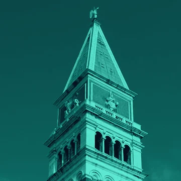

Chi siamo
Veneti, prima che italiani. Bitcoiner dal 2016.
SAFE21 nasce in Veneto da una domanda semplice: come si custodisce davvero un bene che nessuno può stampare, e come lo si lascia ai propri figli?
La nostra storia
Tutto è cominciato cercando alternative monetarie da usare nel territorio, per un'economia circolare fatta di persone e botteghe vicine. Nel dicembre 2016 è arrivata la vera folgorazione: Bitcoin.
Da allora aiutiamo le persone a tenere i propri bitcoin al sicuro, con le chiavi nelle proprie mani, e a pensare per tempo a chi li erediterà.
- dic 2016La folgorazione: Bitcoin come moneta per il territorio.
- oggiAssistenza, corsi, eredità e pagamenti in bitcoin.
- i progettiÀncòra, per l'eredità su Electrum, e Schȅi Wallet, pensato anche per i Veneti.
Perché SAFE21
Safe, non save: «al sicuro» è uno stato, solido come una roccia, non un'azione da ripetere. È lì che devono stare i tuoi bitcoin.
Ventuno milioni: tanti bitcoin esisteranno, mai uno di più.
Ogni bitcoin si divide in 100 milioni di parti, i satoshi. È l'unico bene scarso per regola matematica e infinitamente divisibile*. Custodire un pezzo di matematica, e lasciarlo ai propri figli.
* Oggi la regola di Bitcoin si ferma al satoshi, e la rete Lightning usa già frazioni di satoshi: il limite non è fisso, basta aggiornare i protocolli.